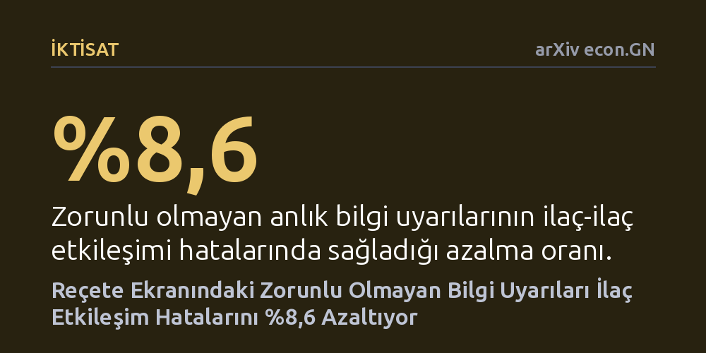

IKTISAT · arXiv econ.GN · 2026-09-11
Araştırmacılar, elektronik reçete sisteminde hekimlere yanıt dayatmayan anlık bilgi uyarılarının tehlikeli ilaç etkileşimlerini azaltıp azaltmadığını 1.700 hekimin reçetelerinde inceledi. Çalışma, bu hafif müdahalenin reçete hatalarını %8,6 azalttığını ve hekimlerde kalıcı bir öğrenme sağlayarak yeni hataları da önlediğini saptadı.
Hekimleri iş akışını bozan zorlayıcı uyarılarla engellemek yerine bağlayıcı olmayan sade bilgi sunmanın da tıbbi hataları kalıcı biçimde azaltabileceğini gösteriyor.

Hastanelerde ve kliniklerde hastaların aynı anda birden fazla ilaç kullanması gerektiğinde, bu ilaçların birbiriyle etkileşime girerek zararlı sonuçlar doğurma riski ciddi biçimde artar. Tıpta 'ilaç-ilaç etkileşimi' olarak adlandırılan bu durum, önlenebilir tıbbi hataların ve buna bağlı hastaneye yatışların başlıca nedenlerinden biridir. Sağlık kuruluşları bu tehlikeyi önlemek amacıyla uzun süredir hekimlerin önüne dijital uyarılar çıkaran klinik karar destek sistemleri kullanıyor.
Ancak mevcut sistemlerin çok önemli bir kusuru var: Ekranda beliren uyarılar genellikle hekimden zorunlu bir yanıt ya da onay talep ediyor. Yoğun bir tempoda hasta muayene eden hekimlerin iş akışını bölen bu pencereler, zamanla 'uyarı yorgunluğuna' yol açıyor ve hekimler uyarıları okumadan hızla kapatmaya başlıyor. Bu durum, iyi niyetle tasarlanan güvenlik sistemlerinin pratikte etkisizleşmesine neden oluyor. Araştırmacılar tam da bu noktada şu sorunun peşine düştü: Hekimleri bir kutucuğu işaretlemeye ya da açıklama yazmaya zorlamadan, yalnızca ekranın bir kenarında tehlikeyi hatırlatan sakin bir bilgi kutusu sunulursa ne olur?
Bu sorunun yanıtını bulmak için araştırmacılar, Hindistan'ın en büyük elektronik tıbbi kayıt platformu üzerinde geniş kapsamlı ve rastgele kontrollü bir saha deneyi kurguladı. Deney kapsamında 1.700 hekimin yazdığı toplam 2,81 milyon reçete mercek altına alındı. Platformu kullanan hekimler rastgele iki gruba ayrıldı ve çalışma boyunca yazılan reçetelerdeki etkileşim hataları 'farkların farkı' adı verilen ekonometrik yöntemle karşılaştırıldı.
Deney grubundaki hekimler, reçetelerine birbiriyle etkileşime giren iki ilaç eklediklerinde ekranlarında anlık bir bilgi uyarısıyla karşılaştı. Fakat mevcut sistemlerin aksine bu uyarı hekimin çalışmasını kilitlemedi; hekimden herhangi bir gerekçe göstermesi veya butona tıklaması istenmedi. Kontrol grubundaki hekimler ise eski düzende, yani hiçbir ek uyarı görmeden reçete yazmaya devam etti. Araştırmacılar aynı zamanda bu müdahalenin hekimlerin muayene süresini uzatıp uzatmadığını ve genel bakım kalitesini düşürüp düşürmediğini de yakından izledi.
Deneyin sonuçları, zorlama içermeyen bu yalın bilgi müdahalesinin reçete hatalarını %8,6 oranında azalttığını gösterdi. Araştırmacılar bu düşüşün somut etkilerini hesapladığında, yıllık yaklaşık 4,8 milyon dolarlık hastaneye yatış masrafının önüne geçilebileceğini ve potansiyel olarak 134 hastanın hayatının kurtulabileceğini belirledi. Üstelik bu kazanımlar elde edilirken hekimlerin muayene hızında veya tanı kalitesinde hiçbir gerileme yaşanmadı.
Çalışmanın en dikkat çekici bulgusu ise hekimlerin davranışındaki değişim mekanizmasında ortaya çıktı. Sürecin başında hatalardaki azalma, hekimlerin ekrandaki uyarıyı görür görmez ilacı silmesiyle (reaktif düzeltme) sağlandı. Ancak zaman ilerledikçe hekimler uyarı henüz ekrana düşmeden önce o tehlikeli ilaç çiftlerini bir arada yazmamayı öğrendi. Dahası, hekimler yalnızca daha önce uyarı aldıkları ilaçları değil, daha önce hiç karşılaşmadıkları yeni riskli ilaç çiftlerini de reçete ederken daha dikkatli davranmaya başladı. Yani sistem geçici bir düzeltme sağlamakla kalmadı, hekimlerde kalıcı ve genellenebilir bir mesleki öğrenme başlattı.
Sağlık yönetimi ve operasyonları alanında uzun süredir kabul gören genel eğilim, çalışanları hata yapmaktan alıkoymak için katı kurallar ve aşılması zorunlu dijital engeller koymaktı. Ancak bu çalışma, profesyonellerin kararlarına saygı duyan ve onların dikkatini dağıtmadan doğru bilgiyi zamanında sunan müdahalelerin çok daha sürdürülebilir sonuçlar verebileceğini ortaya koyuyor. Hekimler üzerlerinde baskı hissetmediklerinde sunulan bilgiyi özümseyip klinik pratiklerine dahil ediyor.
Bu bulgular, yalnızca hastane yazılımları için değil, yüksek dikkat ve uzmanlık gerektiren havacılık, finans veya mühendislik gibi diğer karmaşık operasyonel sistemler için de önemli dersler barındırıyor. Zorlayıcı protokollerin yarattığı direnç ve bıkkınlık yerine, kullanıcıyı güçlendiren ve öğrenmeyi teşvik eden karar destek araçlarının hem maliyetleri düşürmede hem de güvenliği artırmada güçlü bir alternatif oluşturduğu görülüyor.